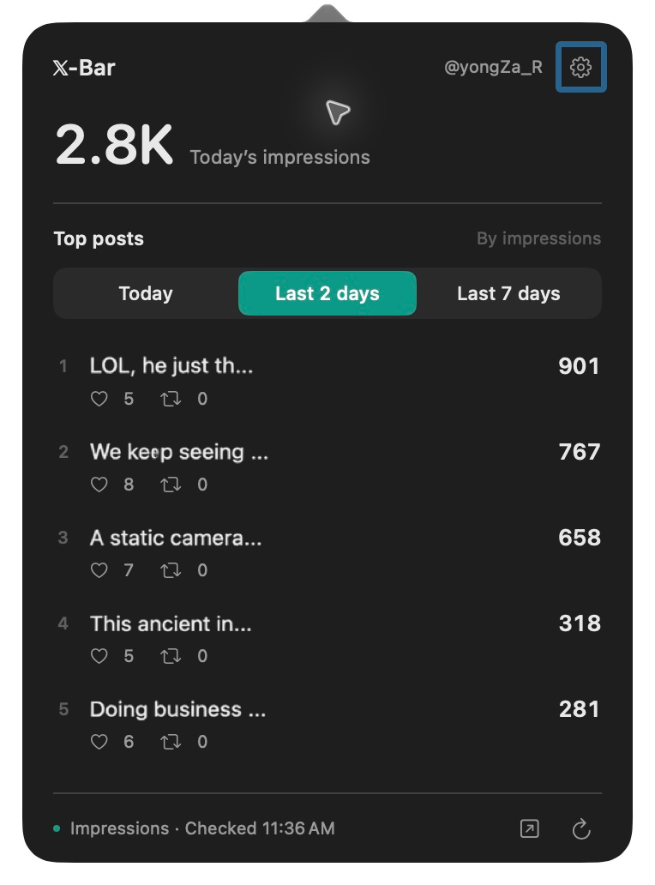

Mac
0.5.4
macOS 14+
Apple Silicon / Intel
DMG · Signed & notarized
Installation guide ↗Free & open source · 한국어 / English / 日本語
Opened X to check a post and lost track of time? Take a quick look with X-Bar, then get back to your day.
0.5.4
macOS 14+
Apple Silicon / Intel
DMG · Signed & notarized
Installation guide ↗0.4.2 beta.1
Windows 11 x64
WebView2 Runtime
EXE · Unsigned installer
Installation guide ↗Requires an account with access to X Analytics.

Windows 11 x64 · Desktop widget · Beta
See today’s impressions and top posts in a small desktop widget. Version 0.4.2 improves recovery and refresh timing.
Run the EXE installer, then sign in to X in the app. Existing users can install from Settings → App updates.
This installer is unsigned. Windows SmartScreen may warn, or device policy may block it.
Keep today’s impressions in view, in the Mac menu bar or on your Windows desktop.
Find your top posts, likes, and reposts. Click a post to open its analytics.
A small rainbow appears in your menu bar when repost activity rises quickly.
Use the button above and open the downloaded DMG.
Drag the X-Bar icon into Applications, then open it.
Choose Safari or in-app sign-in. Setup finishes once your account and today’s impressions are verified.
Enable the X-Bar extension in Safari Settings, allow x.com access, and connect. Once connected, X-Bar can attempt updates with Safari closed while X-Bar is running.
X-Bar is free, with no separate X-Bar account required. Your X account must have access to X Analytics. X’s own service requirements apply separately.
Today’s total is checked every 10 minutes by default, with 5, 10, or 30 minutes available in Settings. Posts update roughly every 10 minutes. Sleep, internet connectivity, and X’s response can cause delays.
They filter by publication date. Per-post impressions, likes, and reposts are lifetime totals. Today’s account total may include older posts. Rankings cover posts observed by the app.
Starting with 0.5.2, check for updates in Settings. Choose Install to download, install, and relaunch. Automatic checks run once a day and can be turned off.
In this Mac’s app-specific storage. Account names, posts, and metrics are not sent to the developer’s servers. Safari connection requires your confirmation. Communication with X is governed by X’s privacy policy.
Starting with 0.5.4, X-Bar registers to launch at login the first time you run it. Use Settings → Launch at login to turn it on or off. If macOS requires approval, choose Open Login Items Settings and allow X-Bar. Turning it off is remembered when you reopen the app.
Enjoying X-Bar? Follow @yongZa_R for updates and the next little app.